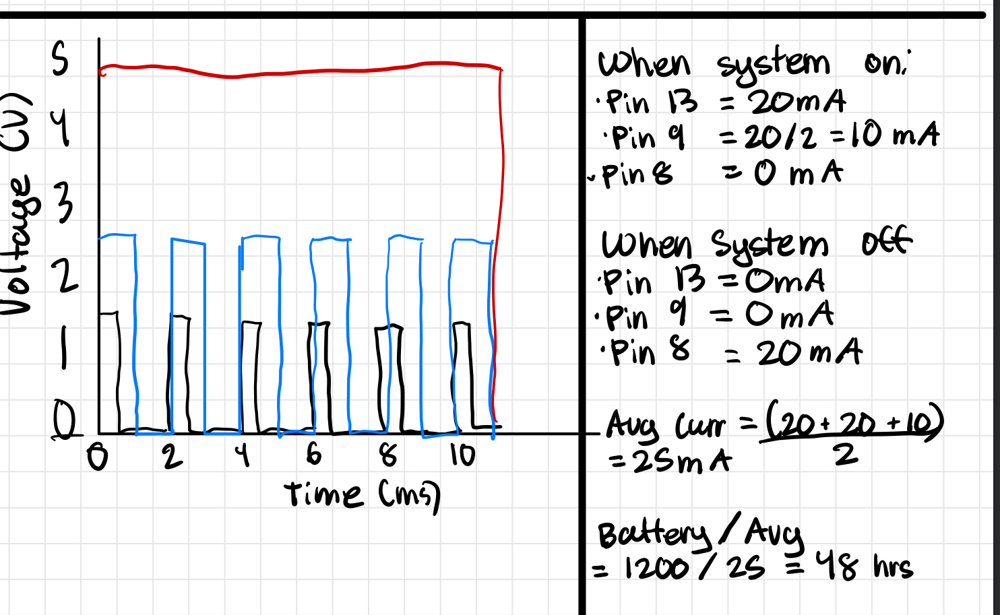

// Initialize button state to keep track of the current state
int buttonState = 0;
// Initialize lastButtonState to keep track of the previous state
int lastButtonState = 0;
// Initialize isOn to keep track if button is on or off
bool isOn = false;
void setup()
{
// Initialize button 2 as input
pinMode(2, INPUT);
// Initialize pins 13, 9, and 8 as output
pinMode(13, OUTPUT);
pinMode(9, OUTPUT);
pinMode(8, OUTPUT);
}
void loop()
{
// Read the current state of the button
buttonState = digitalRead(2);
// Check if the button is pressed
// Need button state to be LOW and last button state to be HIGH
if (buttonState == LOW && lastButtonState == HIGH) {
// Change isOn to TRUE
isOn = !isOn;
delay(50);
}
// If isOn is true, turn on 13, 9, and turn off 8
if (isOn) {
digitalWrite(13, HIGH);
digitalWrite(9, HIGH);
digitalWrite(8, LOW);
// Fade pin 9 from 0 to 250 in increments of 50
for (int fade = 0; fade <= 250; fade += 50) {
analogWrite(9, fade);
delay(100);
}
// Fade pin 9 from 250 to 0 in increments of 50
for (int back = 250; back >= 0; back -= 50) {
analogWrite(9, back);
delay(100);
}
// Small pause
delay(200);
// If isOn is false, turn off 13, 9, and turn on 8
} else {
digitalWrite(13, LOW);
digitalWrite(9, LOW);
digitalWrite(8, HIGH);
}
// Save the current state of the button for the next iteration
lastButtonState = buttonState;
}
Additional Questions

For the graph, the Red line indicates analog write at 255, the Blue line indicates analog write at 128 and the Green line indicates analog write at 64.
Given the schematic, circuit, and firmware, I expect that the circuit will run for 48 hours.